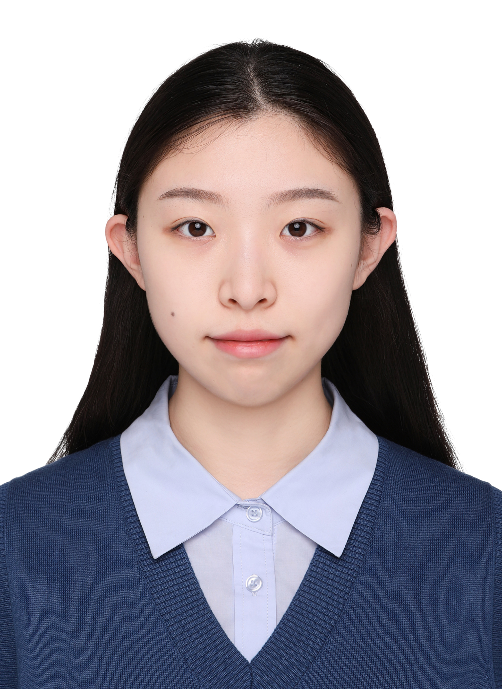

AI Engineer — multi-agent systems that survive contact with real business constraints

I'm a Master's student at Carnegie Mellon University, studying Information Systems Management, graduating in December 2026.
I'm the AI Engineer at Whelix, a robotics startup working on cell culture automation, where I focus on building reliable AI agent systems. I designed and built their internal multi-agent operating system, and I'm now working on Willow — a protocol-generation agent embedded in their robot product. Willow turns a cell-culture goal into an executable plan, one that has to be biologically sound and physically feasible for the hardware to run.
Before that, I built LLM-powered tools at BASF — using LLMs to improve production and management efficiency. At Nanjing University, I was part of LANDS, working under Jiaqi Zheng on end-to-end optimization — my undergraduate thesis applied decision-focused learning and causal inference to reframe a classic uplift-modeling problem.
I'm looking at Applied AI Engineer roles and technical consulting for 2027 — work where I can take a system from demo to something that holds up under scrutiny.
Download CVExperience
AI Engineer Intern
Whelix
Digitalization Intern, Asia-Pacific
BASF
Research Assistant
Nanjing University
Project Intern
Shanghai Baosight Software
Projects
Criteo ad-uplift benchmark · ~3% AUUC gain
Traditional uplift models optimize prediction accuracy, not the ranking decision that's actually deployed. DFUM relaxes the budget-constrained top-k allocation into a differentiable objective, closing the gap between what the model is trained on and what it's used for.
View repo →2nd place · 1,557 teams
Led a team building an intelligent decision-making system for omnichannel fresh-grocery inventory optimization — demand modeling, data cleaning pipeline, and prediction improvements under a live leaderboard.
CLI tool · CMU course project
A command-line prompt optimizer that acts as a consultant — asks clarifying questions, rewrites vague ideas into engineered prompts, and launches the refined version directly in your browser or local AI tools. I handled API integration, user authentication design, and cross-module debugging.
View repo →Protocol-generation agent · Whelix
An agent that turns a cell-culture goal into a plan the robot can execute — where a plausible-sounding output isn't good enough. Designed a 4-stage validation pipeline that catches biologically or physically invalid steps before they ever reach the hardware, cutting reliance on the model getting it right on its own.
Skills